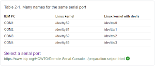

Recently, I encountered a problem getting the tinyFPGA BX to be recognized in WSL. I submitted a WSL issue on GitHub that was acknowledged and promptly closed as a duplicate, as apparently no USB devices are currently supported in WSL. I am almost certain that I previously had this working. A quick Google search, and others appear to be using WSL as well
.
TL;DR - I created a
gist
for the entire WSL toolchain setup for the TinyFPGA.
The problem that I encountered: is that although a Windows DOS prompt sees the device:
{% include code_header.html %}
C:\Users\gojimmypi>tinyprog
TinyProg CLI
------------
Using device id 1d50:6130
Only one board with active bootloader, using it.
WSL does not:
{% include code_header.html %}
gojimmypi@MYHOST: ~
0 $ tinyprog
TinyProg CLI
------------
Using device id 1d50:6130
No port was specified and no active bootloaders found.
Activate bootloader by pressing the reset button.
Given the comments in my GitHub issue about libusb having
never been supported in WSL, I wondered how it could have previously worked? Curiously, I discovered that the tinyFPGA can use either
the serial port or the USB drivers (note the last two options: no libusb support in WSL, but COM ports via pyserial should work):
{% include code_header.html %}
usage: tinyprog [-h] [-l] [-p PROGRAM] [-u PROGRAM_USERDATA]
[--program-image PROGRAM_IMAGE] [-b] [-c COM] [-i ID]
[-d DEVICE] [-a ADDR] [-m] [--update-bootloader] [--libusb]
[--pyserial]
optional arguments:
-h, --help show this help message and exit
-l, --list list connected and active FPGA boards
-p PROGRAM, --program PROGRAM
program FPGA board with the given user bitstream
-u PROGRAM_USERDATA, --program-userdata PROGRAM_USERDATA
program FPGA board with the given user data
--program-image PROGRAM_IMAGE
program FPGA board with a combined user bitstream and
data
-b, --boot command the FPGA board to exit the bootloader and load
the user configuration
-c COM, --com COM serial port name
-i ID, --id ID FPGA board ID
-d DEVICE, --device DEVICE
device id (vendor:product); default is (1d50:6130)
-a ADDR, --addr ADDR force the address to write the bitstream to
-m, --meta dump out the metadata for all connected boards in JSON
--update-bootloader check for new bootloader and update eligible connected
boards
--libusb try using libusb to connect to boards without a serial
driver attached
--pyserial use pyserial to connect to boards
So in theory, this should have forced the issue in WSL and used the serial port, but no luck:
{% include code_header.html %}
tinyprog --pyserial --list
TinyProg CLI
------------
Using device id 1d50:6130
No port was specified and no active bootloaders found.
Activate bootloader by pressing the reset button.
I also tried setting permissions, just in case:
{% include code_header.html %}
sudo usermod -a -G dialout $USER
sudo usermod -a -G tty $USER
Microsoft
claims that Serial COM ports have been supported on WSL since Windows Insider Build 16176. There's also this WSL issue #1929
that indicates serial port issues have been resolved.
Annoyingly, although
Linux starts counting at zero, Microsoft instead apparently decided to instead start at 1 for serial ports in WSL. Thus /dev/ttyS0 for Linux is COM1: on the PC, however COM1: will be /dev/ttyS1
on WSL.
|
 |
|
Google Search Result for "linux list serial ports" |
I also opened a new
Recognizing TinyFPGA BX in WSL topic on the tinyFPGA discourse
site.
UPDATE: many thanks to
lawrie.griffiths for his help on the tinyFPGA discourse thread for determining that although the --list and --meta parameters do not currently work in WSL, forcing a reboot with -b and most importantly, programming with -p while explicitly naming the com port with the -c
option does work! Woohoo :)
Here are the commands in WSL of interest:
{% include code_header.html %}
# force tinyFPGA to exit bootloader (reset or unplug board afterwards as needed)
tinyprog -b -c /dev/ttyS12
# program the tinyFPGA, while explicitly naming the port
tinyprog --com /dev/ttyS12 -p hello_word.bin
As a reminder,
do not modify WSL filesystem file from Windows! Yes, I've seen some pretty weird things happen when I tested that. But feel free to edit any other files. For instance, the entire C:\ directory is available in WSL as /mnt/c/
.
Check out my
next blog on setting up a soft RISC-V CPU on the tinyFPGA
.
Resources, Inspiration, Credits, and Other Links:
Please leave comments, ideas, suggestions below (moderated, sometimes delayed) or send me a message at gmail, or find
me on twitter.
Copyright (c) gojimmypi all rights reserved. Blogger Image Move Cleaned: 5/3/2021 1:35:54 PM
{kind=link}